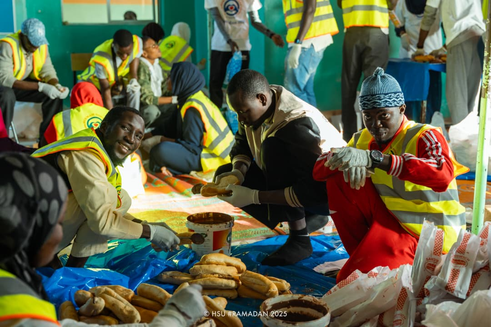
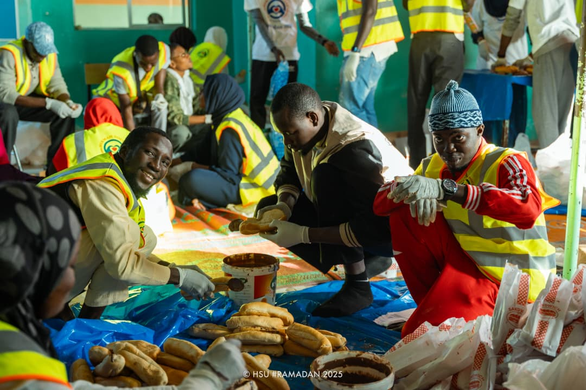

Projet de virtualisation réseau (SDN)
OpenvSwitch, Ryu, Proxmox
Mise en place d'une architecture SDN pour expérimentation et segmentation du trafic.
OpenvSwitch, Ryu, Proxmox
Mise en place d'une architecture SDN pour expérimentation et segmentation du trafic.
Asterisk, VLANs
Conception et déploiement d'un PBX pour communications internes et tests d'interconnexion.

HTML / CSS / JS
Site portfolio avec animations CSS avancées et optimisation responsive — ce site en est un exemple.

Routage, DHCP
Configuration d'équipements pour la mise en place de services réseau et tests de connectivité.

Python, MySQL, Web UI
Interface web pour monitorer bande passante, hôtes et générer alertes (tableaux de bord).
Maison de la Sagesse
Formation générale et religieuse axée sur les sciences islamiques et l'éducation.
Maison de la Sagesse
Formation scientifique offrant des bases solides en mathématiques et sciences naturelles.
École Supérieure Polytechnique (ESP)
Parcours en cours (2024–2026) centré sur l'administration réseau, la télécommunication et la sécurité.
Force‑N
Compétences pratiques en outils bureautiques et fondamentaux d'internet.
Force‑N
Connaissances en e-commerce, marketing digital et outils de vente en ligne.
Huawei Talent Online
Certificat technique couvrant fondamentaux des réseaux et équipements datacom.
Cisco (via Force‑N)
Introduction aux concepts de cybersécurité et pratiques défensives pour réseaux.
Cisco (via ESP Academie)
Introduction aux concepts de réseaux.
OpenvSwitch, Ryu, Proxmox
Mise en place d'une architecture SDN pour expérimentation et segmentation du trafic.
Asterisk, VLANs
Conception et déploiement d'un PBX pour communications internes et tests d'interconnexion.
HTML / CSS / JS
Site portfolio avec animations CSS avancées et optimisation responsive — ce site en est un exemple.
Routage, DHCP
Configuration d'équipements pour la mise en place de services réseau et tests de connectivité.
Python, MySQL, Web UI
Interface web pour monitorer bande passante, hôtes et générer alertes (tableaux de bord).
 



Parlez-moi de votre projet — réponse rapide.